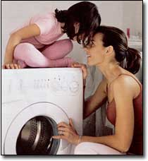
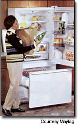

Are your home appliances green? No, not that nauseating avocado tint that was popular back in the 1970s. The question is, are your appliances easy on the environment? A green appliance is generally defined as any energy-efficient home appliance, especially one that’s earned an Energy Star rating from the federal government. The more efficient the appliance, the less energy (and, in some cases, water) it will use.
Lower energy consumption means less pollution from the generation of electricity. This is important because about 90 percent of U.S. electricity currently comes from nonrenewable sources, mainly fossil fuels and nuclear power. Plus, energy-efficient appliances can save you money on monthly utilities. Follow these guidelines to switch to greener appliances in your home.
Water Heaters
Heating water consumes about 20 percent of the total energy used in most homes. If the tank on your water heater is more than 12 years old, consider replacing it with a new unit (the last two digits of your heater's serial number usually represent the year of manufacture). Some utilities offer rebates on new, energy-efficient models. If you decide to buy a new tank-type water heater, check the Energy Factor (EF) ratings to help you choose the right model. The EF rating, based on an assumed use of 64 gallons of water per day, is the basis for the estimated annual energy consumption number found on the yellow EnergyGuide label on new water heaters.
Electric water heaters have an EF rating between 0.78 and 0.96. Look for an EF of 0.91 or better. Gas water heaters generally have an EF between 0.5 to 0.6. Look for an EF of 0.6 or better when buying a gas model. For oil-powered water heaters, an EF of 0.59 or better is ideal.
Refrigerators and Freezers
After water heaters, refrigerators and freezers are the next biggest household power-gluttons. It's possible to save $50 or more annually on your electric bill by purchasing a new energy-efficient model. Although federal law requires minimum energy efficiency levels for refrigerators, significant differences can exist between similar models. Refer to the EnergyGuide label and also look for the Energy Star to select the most efficient model. And keep these general guidelines in mind when you're shopping for a new refrigerator:
• Refrigerators with a freezer on top or bottom tend to be more efficient than side-by-side models.
• Through-the-door dispensers and automatic ice makers cost more, increase energy consumption and tend to need more frequent repairs.
• Larger models use more energy than smaller models and require more raw materials to manufacture.
Clothes Washers and Dryers
If you regularly do six loads of laundry a week, you can save about 6,000 gallons of water a year by switching to a horizontal-axis washing machine. Most Americans use traditional vertical-axis washing machines (typically known as toploaders), which waste lots of water and leave clothes relatively wet, requiring more drying time. The new water-efficient, high-speed horizontal-axis washers address these issues, and can save you up to $100 a year on utility bills.
Clothes dryers are the next biggest energy consumer after refrigerators. The best dryers now come with moisture sensors in the drum that shut the machine off when the clothes are dry. Compared to machines with traditional timed drying cycles, this saves energy and reduces wear and tear on your clothes from over-drying. Gas dryers typically cost more to purchase than electric models, but are normally cheaper to operate. For the simplest and least expensive dryer of all, though, buy and use a clothesline. You'll have no electric or gas costs, and no repair bills.
For more information on the latest technologies in appliances, visit: GreenerChoices.org - A site sponsored by the highly respected Consumer Reports magazine.
|
 Photoalto/Creatas |
 |
|